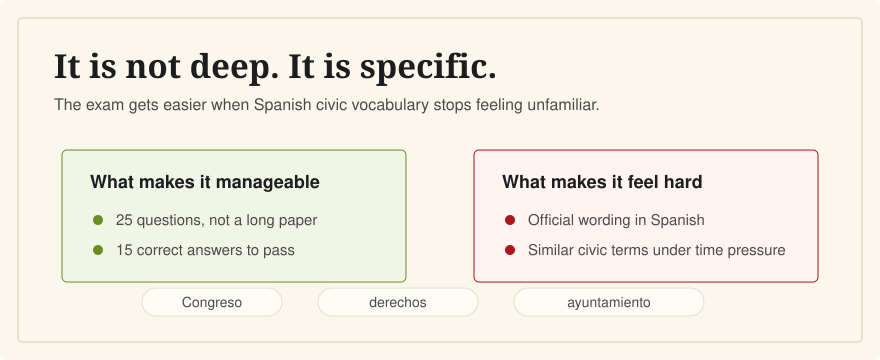

How Hard Is the CCSE?
Last verified: June 5, 2026
The CCSE is usually manageable if you prepare from the official question bank, but it can feel hard if your Spanish reading is weak or you only memorize answer letters.

The exam is short: 25 questions in 45 minutes, with 15 correct answers needed to pass. The challenge is not academic depth. The challenge is recognizing official Spanish wording about institutions, laws, geography, culture, and everyday civic life.
Why It Feels Easy for Some People
The CCSE is not an essay exam. It is multiple choice and true/false, and Instituto Cervantes publishes official preparation materials for the current year. If you can read basic Spanish and work through the question bank calmly, the format is predictable.
Why It Feels Hard for English Speakers
The hard part is often language, not the facts. You may know what the Congress is in English, but still hesitate when a question says Congreso de los Diputados, poder legislativo, or participación ciudadana. Some answer options also look similar if you have not learned the civic vocabulary.
Another risk is passive recognition. Seeing the correct answer during study can feel like knowing it. Timed practice without hints is a better measure.
What Makes It Manageable
- The exam has a fixed official format.
- There are 25 questions, not a long paper.
- You need 60%, not a perfect score.
- Wrong answers are not penalized.
- Official preparation materials are available free from Instituto Cervantes.
A Practical Difficulty Scale
If you read Spanish comfortably
Expect the CCSE to be mostly a memorization and review task. Focus on gaps: institutions, autonomous communities, rights and duties, and administrative vocabulary.
If your Spanish is basic
Give yourself more time. Study bilingually, but keep the Spanish visible. Learn the repeated words and test yourself without English before booking the exam.
If you are relying only on English
You are not ready yet. The exam itself is in Spanish. Use English to build understanding, then convert that understanding back into Spanish recognition.
Related Guides
- Do I need Spanish to pass the CCSE?
- How many questions can I miss?
- How long should I study?
- Best CCSE study resources for English speakers
Sources
- Instituto Cervantes: CCSE format, duration, language, and scoring
- Instituto Cervantes: CCSE official preparation materials
- Instituto Cervantes: CCSE pass mark and grading
CCSE English is independent, not official. It helps English speakers turn official Spanish questions into understood concepts.